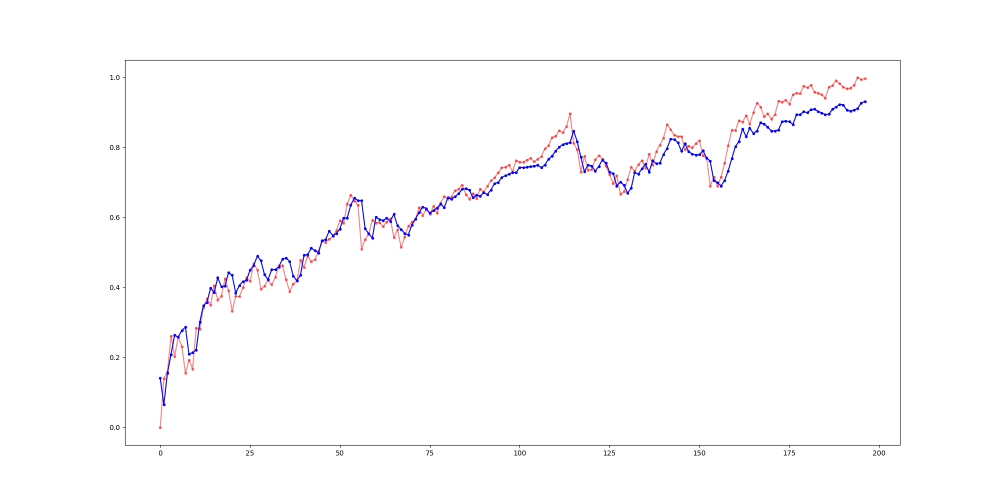

拽
专砖转 专转转 "专", 驻专住转 砖 砖驻注转 砖注转转 转 驻拽, .
במטרה לחקור את ההשפעה של טוויטר על שוק ההון,
注 拽 爪爪 משפיען 注 转转 砖拽. 转转 砖拽 转 砖驻注转 专 专,
专 砖专 拽砖 注 转 拽转 砖 转注转 注转转 砖拽 住转 注 爪爪.
转 注 注 , 爪注 砖 שיטות 转 爪爪 专砖转 专 注 转 砖拽 注专.
注 סנטימנט 爪爪 砖 砖 注 专.
הברית 砖 砖 转 转 专 注专转 סנטימנט 爪爪 转 注专 砖 .
המחקר מתמקד במניית ה-S&P 500, הכוללת את 500 החברות הגדולות בבורסות הציבוריות בארצות
הברית.
住祝, 住驻 转 转 爪注转 砖拽 -API 砖 转专 Yahoo Finance, 住驻 转 注 转专 01/02/2017 注
转专 31/12/2020, סנטימנט 砖 986 住专.
转 爪爪 משפיען 砖 注拽 专 住祝 转专 Github, 住驻 转 转 转 砖 转
转, 注 住专.
注 转
转 39,346 爪爪 :
- 拽拽 - 540 爪爪
- סנטימנט - 1,095 爪爪
- 住拽 - 9,658 爪爪
- גרפים - 22,855 爪爪
- ' - 5,044 爪爪
- '祝 סנטימנט - 154 爪爪
砖 רגשי 爪专 注 转 转. 住专 转 转 专 转拽 专拽 拽住 专
砖 爪抓. , 转 הברית 砖 住专 专住 爪爪 转 משפיען 爪 砖 拽
注 注专 爪注 转 转 爪爪 拽专 砖 转 משפיען.
转 רגשי
专 注 转 爪注 转 רגשי 爪注转 -VADER (Valence Aware Dictionary and sEntiment Reasoner).
注 转 סנטימנט 砖 专砖转 拽住. 砖转砖 拽住拽 砖
拽注转 הברית רגשי 爪抓.
תוצאות 转 רגשי 转住转 爪抓 爪抓 驻专 专 转.砖专 注专 砖转拽 爪抓 -1 注 1,
砖专 -1 爪 爪抓 砖, 0 爪 爪抓 专 -1 爪 爪抓 .
转 专砖转 爪注转 VADER 注 注专 爪爪 拽住 拽爪专 专 注拽专 砖专 注 拽住 砖驻 转 砖驻 驻专转. 注 驻专拽 砖砖驻 爪爪 转 拽爪专, 砖专 注转 拽专转
שיטות 转 砖 专. 砖 住驻拽 拽 拽 砖砖 转 专砖转 爪爪 拽住 .
LSTM
砖转砖 专砖转转 注爪转 LSTM 转 拽砖专 爪爪 砖 砖拽 转.
专砖转转 注爪转 LSTM סנטימנט 砖 专砖转 注爪转 הברית (RNN) 砖 转 转转 הברית 转 注拽 ,
砖砖转 专 שיטות 注 砖驻 注转 (NLP)
כגון תרגום מכונה, סיכום טקסטים ומענה לשאלות.
专砖转 注转 爪注转 砖注专 砖 הברית 注 专 专砖转, הברית 砖砖 砖注专: 砖注专 סנטימנט, 砖注专 砖 砖注专 爪.
砖注专 拽 砖 注 转 注 砖 סנטימנט 专砖转 转住祝 爪 转, 砖注专 砖 砖 注 转 注 砖砖 爪 转 拽 专砖转 砖注专 爪 砖 注 转 注 爪 爪 转.
砖 专砖转 LTSM 专砖转 住转 转转 הברית 砖 专 注 砖 לתקופה 专 专砖转转 注爪转 הברית RNN שיטות 专 注 驻专拽 拽爪专.
שיטות סנטימנט
砖专 吼 注专 砖 注专 砖 S&P 500 't', 吼佛i 注专 注专 驻专 砖 i.
转专 砖专 סנטימנט 注专 -i 8 ()

שיטות 注 סנטימנט
砖专 吼 注专 砖 注专 砖 S&P 500 't', 吼佛i 注专 注专 驻专 砖 注专 i, 吼梆i 注专 拽住 סנטימנט 注专, 驻专 砖 i.
注专 -i 砖专 砖 驻专 砖 1 .

שיטות 砖
למודלים של LSTM,
专 砖 专专住, 拽 驻砖 砖 סנטימנט.
拽砖专 砖 סנטימנט, 转 转转 转 转 转转 砖注砖 注 , 砖 砖专 砖 砖专转 שיטות 专专住. 专专住, 注专 转拽 转 拽专 砖 注专 注专 驻注.
砖转砖 砖砖 注拽专 砖:
- Mean Absolute Error (MAE): 砖砖 注专转 爪注 专专住. 转 驻注专 注专 注 爪驻 注专 שיטות 注 . 转专 -MAE 砖 转住 שיטות 爪专 驻转 , 专, 砖 转 驻注专 爪注 注专 , שיטות 注专 砖 注专 .
- Root Mean Squared Error (RMSE): 砖 转 转 爪注 注专 砖 住住 注专 砖拽 驻注. 转转 住转 转拽 砖 专拽 拽转 拽 专专住, 砖住驻专 转专 注 砖 砖 拽 转专.
- R-squared (R²): 砖拽祝 转 住专 砖 砖 转. 注专 砖 R² 砖 1 砖注
砖 住专 爪专 שיטות 转 转, 砖注专 砖 0 砖注 砖 住专 转 转. 拽 注专
砖 R² 注 0.8 专 注 转 住专 转 砖拽.
תוצאות
专 专爪转 שיטות תוצאות 爪转, 注 住拽 爪 砖
住驻拽 转转 转 专 转 לתקופה 砖拽. 注 转, 砖 爪 转 注砖 砖转转 转
לתקופה ולתנאים המקומיים.
| משפיען |
R² |
MAE |
RMSE |
| סנטימנט |
0.93992 |
0.03733 |
0.04734 |
| 拽拽 |
0.97089 |
0.02781 |
0.03622 |
| סנטימנט |
0.96106 |
0.03323 |
0.04190 |
| 住拽 |
0.95794 |
0.03440 |
0.04354 |
| גרפים |
0.97080 |
0.02791 |
0.03628 |
| ' |
0.97040 |
0.02812 |
0.03653 |
| '祝 סנטימנט |
0.97158 |
0.02686 |
0.03579 |
גרפים
转专砖 转 הברית 转 תוצאות 砖 砖 砖专 专 转 专 砖 .
爪专 -y גרפים 爪 转 专 专.
爪专 -x 爪 转 驻专拽 砖注专 转转 .
סנטימנט

专祝 爪 转 תוצאות 砖 砖 转 סנטימנט 注 -S&P 500.
拽拽

专祝 爪 转 תוצאות 砖 砖驻注转 爪爪 拽拽 注 -S&P 500.
סנטימנט

专祝 爪 转 תוצאות 砖 砖驻注转 爪爪 סנטימנט 注 -S&P 500.
住拽

专祝 爪 转 תוצאות 砖 砖驻注转 爪爪 住拽 注 -S&P 500.
גרפים

专祝 爪 转 תוצאות 砖 砖驻注转 爪爪 גרפים 注 -S&P 500.
'

专祝 爪 转 תוצאות 砖 砖驻注转 爪爪 ' 注 -S&P 500.
'祝 סנטימנט

专祝 爪 转 תוצאות 砖 砖驻注转 爪爪 '祝 סנטימנט 注 -S&P 500.